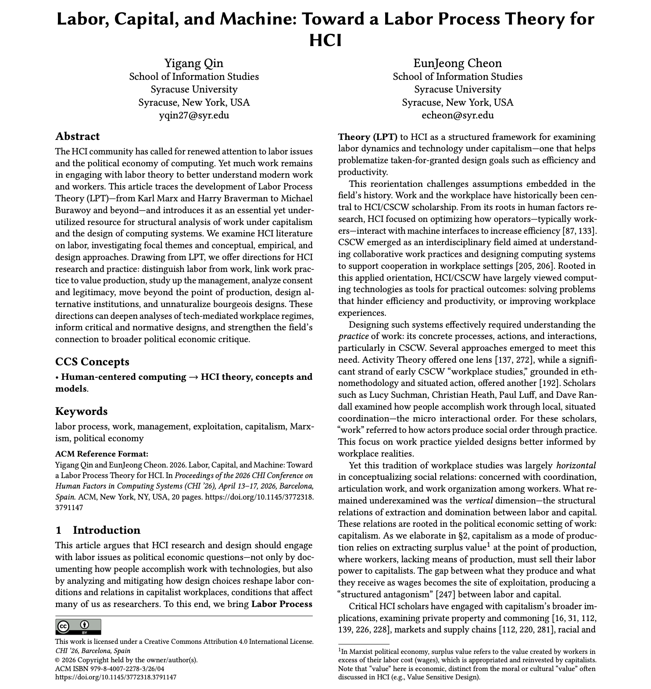
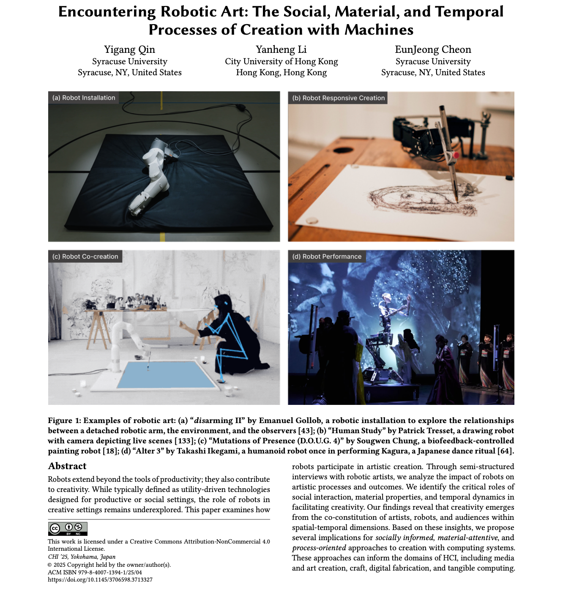
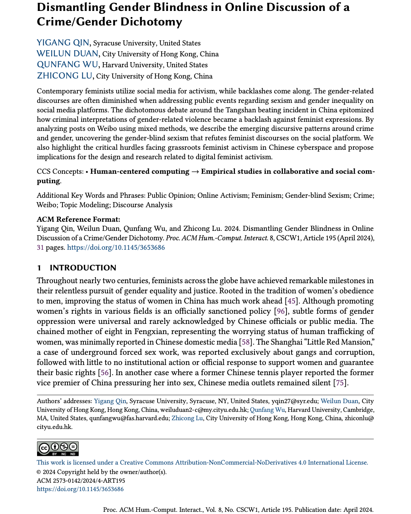

Labor, Capital, and Machine: Toward A Labor Process Theory for HCI
Yigang Qin, EunJeong Cheon. (2026).
Proceedings of the CHI Conference on Human Factors in Computing Systems (CHI). 20 pages.
What is labor under capitalism? What it means for technology design?

Encountering Robotic Art: The Social, Material, and Temporal Processes of Creation with Machines
Yigang Qin, Yanheng Li, EunJeong Cheon. (2025).
Proceedings of the CHI Conference on Human Factors in Computing Systems (CHI). 18 pages.
Honorable Mention Award
How do contemporary artists develop creative projects with robots?

Dismantling Gender Blindness in Online Discussion of a Crime/Gender Dichotomy
Yigang Qin, Weilun Duan, Qunfang Wu, Zhicong Lu. (2024).
Proceedings of the ACM on Human-Computer Interaction, 8(CSCW1). 31 pages.
DEI Recognition Award
How do people deny and defence gendered interpretation of a violence event?
View Full List of Publications on Google Scholar